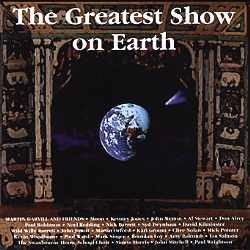
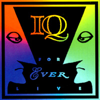
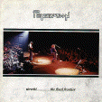
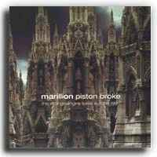
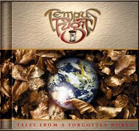
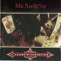
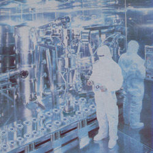
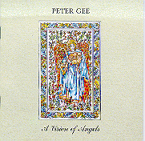

|
사실 네오 프로그라는
장르를 여타 프로그 장르와 명확히 구분짓기는 힘들다고 생각합니다.
80년대 프로그
메인 스트림에서의 슈퍼밴드들의 소위 변절이라고 일컬어지는 그 이후, 특별히
초기 Genesis의 영향을 많이 받은 팀들 Twelfth Night, Marillion, IQ 및 몇몇
뉴 프론티어의 등장으로 프로그 팬들의 갈증을 해소 시켜줬다는 의미에서 'NEO'라는
수식어가 붙여졌음을 상기해 볼 때, 지금의 'fancy', 'refine', 'commercial',
'pop-rock'이라는 단어들로 폄하되는 '네오 프로그'라고 하는 의미는 좀 변절된
것이 아닌가 하는 생각입니다..
물론 자의든 타의든
현재 네오 프로그라고 불리우는 밴드들의 사운드가 위에서 언급한 수식어에서
벗어나지 못하고 있음을 볼 때, 그런것에 대해 뭐 별로 반박하고 싶은 생각이
없는것도 사실이에요..
하지만 음악을
듣는 목적이 ,특히 프로그 장르에서, 어느정도의 카타르시스와 오르가즘이 섞인
극한의 감동을 얻고자 하는 것이라면, 현재의 변절된 의미에서의 네오 프로그
장르에서도 가능하다는 생각입니다.
이번 감상회를
통해 프로그 타장르와 어느정도 균형을 잡을 수 있는 기회가 된다면, 그것만으로도
충분하다고 생각되고요, 다만, 제 개인적인 취향에서 선곡瑛습 미리 말씀
드리며, 나른한 토요일 오후 부담없이 감상하실 수 있는 트랙들입니다
b r a v e
1999년 5월 22일
제19회 감상회 (홍대앞 피플)
#1.
Greatest Show/Sodium City/Circus in the sky (10min)
Martin Darvill and
Friends |
|
The Greates Show
on Earth

1998
MOON, John Wetton, Al Stewart,
Nick Barrett, Don Airey, Martin Oford, John Jowitt, Clive Nolan, Mick Pointer,
Karl Groom....more
|
Martin
Darvill은 이 앨범의 주축인 네오 프로그 팀 'Moon'의 기타리스트입니다.
총 16트랙 중 맨
마지막곡 타이틀 트랙은 Iq의 Martin Orford의 프로듀스로 나머지는 Threshold를
이끌고 있는 네오 프로그계 명 프로듀서 Karl Groom이 맡고 있습니다...
올스타 앨범이라는게
원래 사공들이 많아 기대치 보다 못할 경우가 종종 있지만, 그래도 이름값은
톡톡히 해내고 있는 듯 하네요.
의외로 70년대
분위기도 많이 풍기고 들을수록 더 땡기는 사운드를 내줍니다.
선정곡중 보컬은
Ian Moon이 몽환적인 엔딩 건반솔로는 Don Airey, 기타솔로는 Nick Barrett이
맡아주고 있습니다 |
#2. Enemy
Smacks - LIVE (15min)
I Q |
|
FOREVER LIVE

1996
|
Iq의
Subterranea이전시대를 결산하는 앨범으로 Iq의 앨범들중에서 최선의 선곡,
최고의 연주, 최상의 음질로
여러분들을 모실
라이브 앨범입니다.
20년뒤쯤 '90년대
프로그 사운드는 이러했더니라' 라고 들려줄 수 있는 90년대 최고의 프로그
라이브 중 하나 일거라는 생각이에요..
얼마전 팬들을
위해 비디오와는 분리되어 CD로만 재발매 되었습니다..
Iq 폴에서 항상
best favourite song 1,2위에 랭크되는 '적의 낌새'를 골랐습니다. 라이브의
하이라이트이기도
하고...연주나
음질이나 스튜디오 앨범보다 훨씬 좋아요.. |
#3.
The Breaking the Spell - LIVE
(8min)
PENDRAGON |
|
Utretch...The Final Frontier

1995
|
Pendragon이
Marillion이나 Iq보다
뒤늦게
명성을
얻은 것은
역시
프론트
맨(like Fish and
Peter Nicholls)의
부재가
큰
원인이지
않았나
싶어요....
역시나 Nick Barrett
혼자
북(보컬)치고
장구(기타)치고
하는
라이브지만
매우
뛰어난 melodic maker인
것만은
틀림없습니다...
들으실
곡은 Pendragon의
Trilogy
앨범중 2번째인 'The Windows of Life'의
수록곡
이에요..
Nick의
엄청난
기타
솔로
플레잉을
들으실
수
있습니다 |
#4.
This Strange Engine - LIVE (19min)
including Pete's bass
solo
MARILL10N |
|
Piston Broke

1998
|
97년도의
Marillion이라..
'This Strange
Engine'앨범내고 욕 많이 먹었습니다.
동년에 Iq, The
Flower Kings 컨셉 더블시디 내고,
같잖은 밴드 'Citizen
Cane'까지 컨셉 앨범 냈다고
방방 뜰 때, '드디어
맞 간 마릴룐' 이라는 등.....
하지만 이 앨범의
마지막 곡 타이틀 트랙은 왜 아직도 Marillion에게 프로그에의 미련을 버리지
못하게 하는지에 대한 이유를 알려줍니다....
Marillion 특유의
정과 동의 대비를 애절하게 넘나드는 Steve Hogarth의 외유내강형 보컬의 진수를
믹싱이나 이펙트가
전혀 첨가가 안된
생생한 원음 그대로
들으시겠습니다. |
#5.
The City and The Crystal (7 min)
TEMPUS FUGIT |
|
The Tales from Forgotten World

1997
|
예전에
한번 이들의 리뷰를 포스팅 한적이 있었는데, 사운드가 궁금하실 것 같아 골랐습니다....
브라질이라는 나라의
이미지와는 좀 다른, 매우 섬세한 심포닉 지향의 네오 프로그 스타일이에요...
아마도 동민님들의
평균적인 취향에 가장 근접한 듯한 사운드 일 듯....한 생각이고요..
키보드와 보컬이
겸임이라 보컬이 약하다는 평도 있지만, 괜찮다는 생각입니다.
주목할 만한 점은
데뷔앨범입니다. |
#6. Closet
Skelectons (10 min)
MR.SO&SO |
|
Compendium

1994
|
이들의
음악을 첨 들으면서 '야 참 모던하다'라는 느낌이었는데...
Mr So&So의
밴드멤버들과 잘 안다는 한 U.K guy의 얘기로는 Mr.So&So 멤버들은
자신들의 음악을
'mordern prog'라고 부른다고 하더군요....
5년전에 발표되었고,
Yes와 Marillion의 흔적이 느껴지는 것은 어쩔 수 없지만,
내일 나올 음반이라고
짤탱이를 부려도 될만한 아주 'Cool'하고 'fresh'한 사운드입니다.... |
#7.
The Smart kids/Tinto Brass (10
min)
PORCUPINE TREE |
|
Stupid Dreams

1999
|
아마도
Steve Wilson은
TFK의 Ronie Stolt와
함께 현재 메인스트림 프로그에서 음악성이나 실력면에서 인정을 받으면서도
가장 왕성한 활동을
하는 뮤지션이 아닌가 싶습니다.
'Signify'와 라이브앨범
'Coma Divine'이후 사이키델릭보다는 점점 Straight forward한 쪽으로 흐르고
있는 것은 어쩔 수 없지만, 특유의 톡 쏘는맛은 잃지 않고 있어요...
Porcupine Tree식
발라드 'A Smart Kids'와 Ozric Tentacles과 비교될 수 있을만한 연주곡 'Tinto
Brass'의 접속곡입니다. 역시 Ozric~보다는 훨 순해요 |
#8.
Always (10 min)
PETER GEE |
|
A Vision of Angels

1997
|
Peter
Gee(Pendragon의 Bassist)의 두 번째 솔로앨범중에서 당일 'Neo-prog를 알고싶다'의
마지막 곡으로 골랐습니다.
Nick Barrett의
카리스마에 가려 빛 못본 Clive Nolan과 Peter Gee이지만 이들의 아웃사이드
프로젝은 어떤면에선 Pendragon 앨범의 완성도를 웃돈다고 할 수 있어요...
이 앨범의 전반적
분위기는 Camel과 비슷하고, 퓨전적인 요소가 강한 프로그-팝이라고 할 수 밖엔
없지만, 이만큼 수준높은 Pop-Rock도 쉽게 듣기는 힘들거라는 생각입니다 |
|